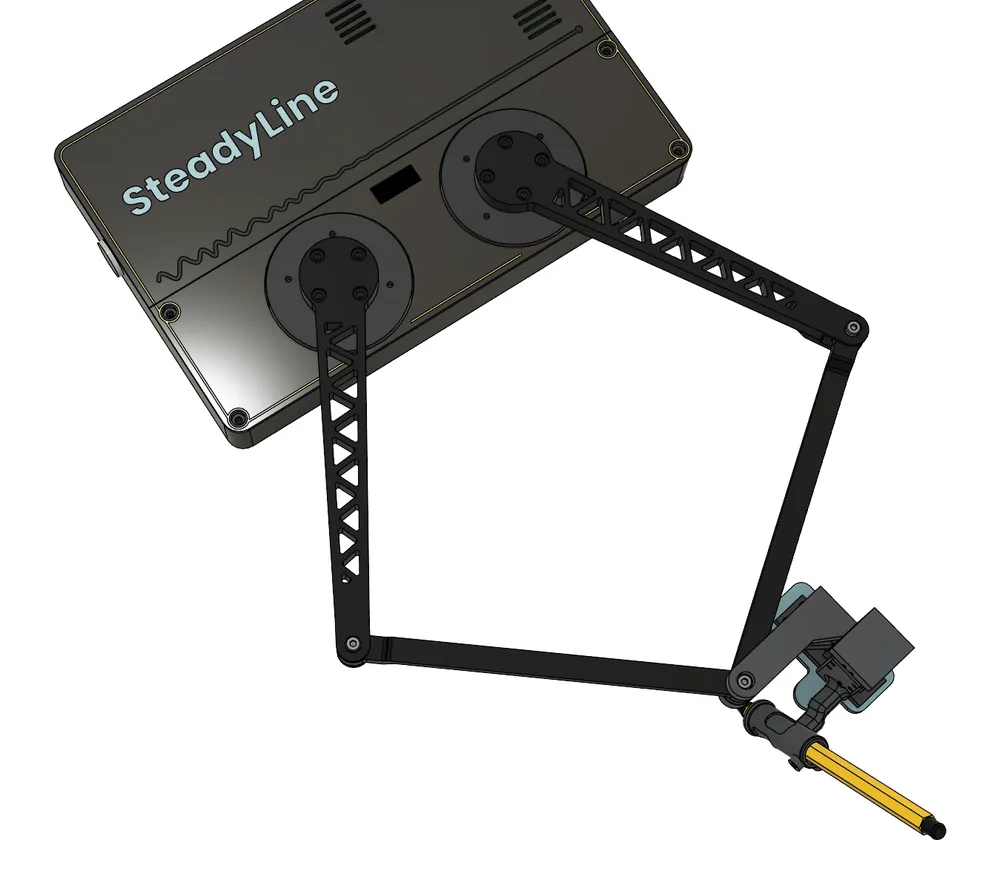
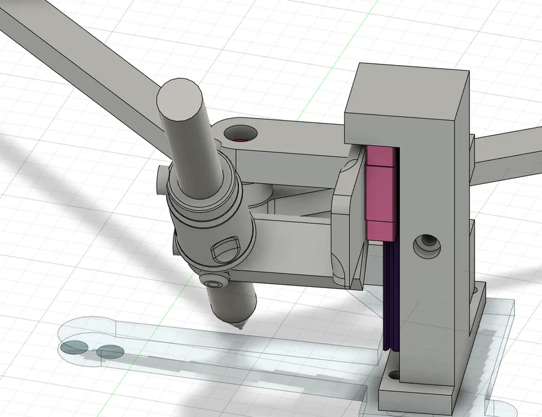
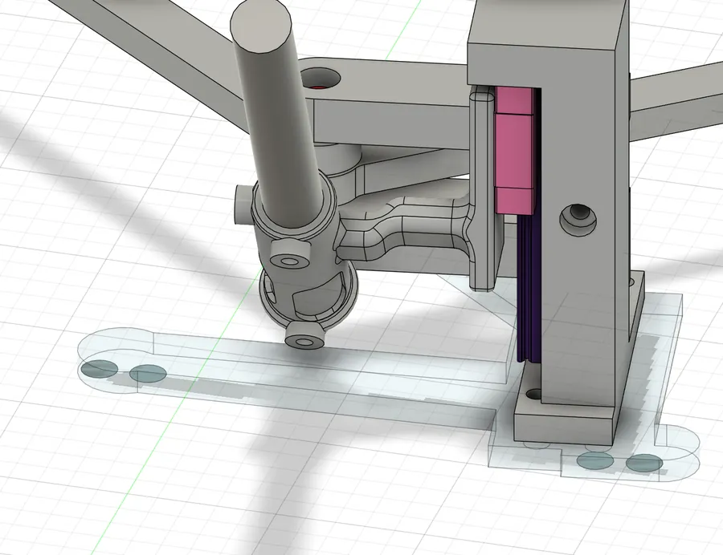
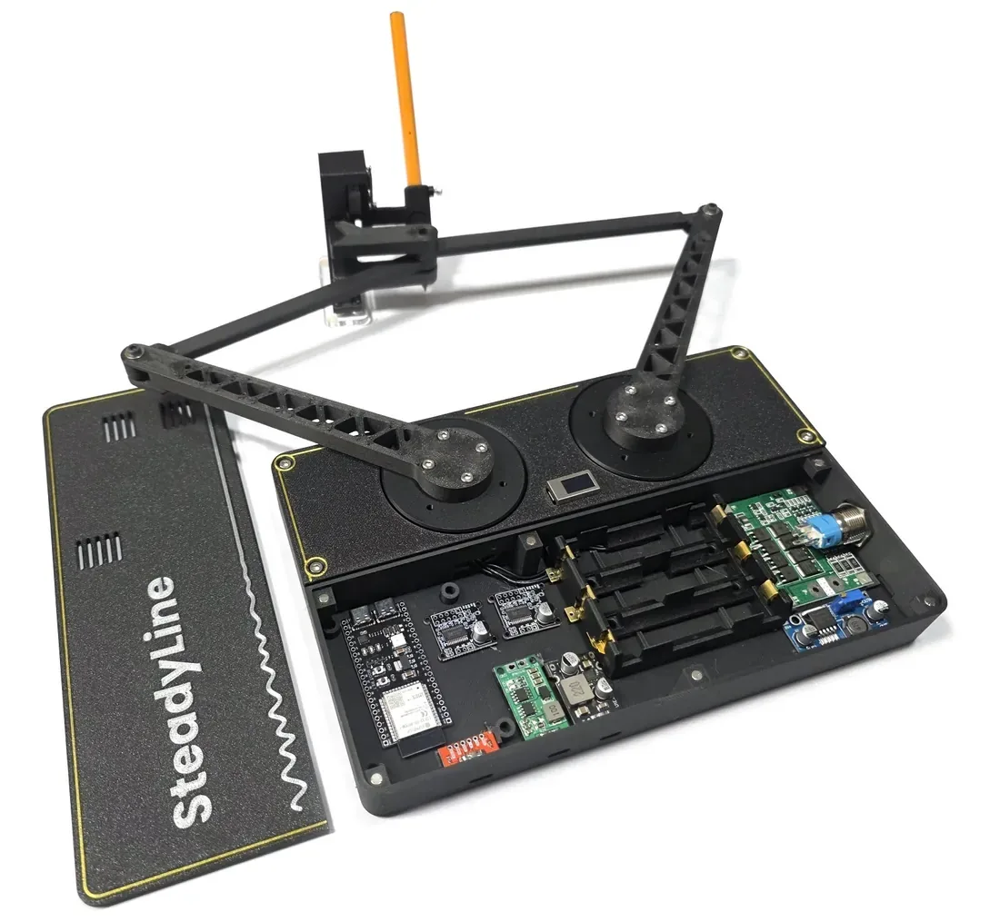

UB 3D 실습 · 프로젝트 예시
SteadyLine은 이렇게 설계했습니다
손떨림이 있는 사람이 직접 글씨를 쓰도록 돕는 탁상형 장치를 AI와 함께 설계하고 만든 과정입니다. 무엇을 AI에게 맡기고 무엇을 직접 정했는지를 중심으로 정리했습니다.
1무엇을 만들었나

바닥에 고정한 모터 2개와 팔 4개가 고리처럼 이어진 5절 링크 구조로, 모터가 펜 끝에 힘을 줍니다. 글씨는 사용자가 직접 쓰고, 장치는 떨리는 움직임만 줄이는 것이 목표입니다.
2026 KNU-UP 학생 창업아이템 시작품제작 경진대회에 내서 입선했습니다. 대회 때는 기구와 케이스까지 완성한 상태였고, 떨림을 줄이는 제어는 다음 단계입니다.
2진행 순서
모델링을 AI에게 맡긴 건 10월 12일부터입니다. 그 전 한 달 가까이는 아이디어와 구조를 대화로 정하는 데 썼고, 모델링을 시작해서 조립까지는 8일 걸렸습니다.
| 단계 | 기간 | 한 일 |
|---|---|---|
| 아이디어 | 9월 중순 | 남는 모터 2개의 쓸모를 묻고, 조건을 붙여 좁힘 |
| 구조 정하기 | 9월 중순~10월 초 | 방식, 관절, 부품, 주요 치수를 대화로 정함 |
| 정리해서 넘기기 | 10/12 | 대화를 문서 하나로 정리해 새 대화로 넘김 |
| 모델링 | 10/12~10/19 | AI가 Fusion에서 그리고, 저는 캡처를 보고 판단 |
| 시험 출력과 실측 | 10/13~10/18 | 끼움 치수를 시험판으로 정하고, 부품을 직접 재서 반영 |
| 조립하고 고치기 | 10/20~10/25 | 실물을 보고 구조를 더 단순하게 |
3아이디어 — 가진 것에서 출발해 조건으로 좁히기
- 처음에는 남는 GM5208 모터 2개로 뭘 만들 수 있을지 물었습니다. 짐벌, 회전 스테이지, 햅틱 노브, 밸런싱 로봇 같은 후보가 나왔습니다.
- 대회에 낼 만한 걸 찾으면서, 그림 그리기 같은 것 말고 노인복지나 의료처럼 사회문제를 해결할 수 있는 것이어야 한다고 조건을 붙였습니다. 재활 장치, 떨림 평가와 필기 보조, 시각장애인용 촉각 그래프 같은 후보가 나왔고, 선행 사례를 찾아보며 하나씩 걸렀습니다.
- 중간에 이야기가 창업대회 준비 쪽으로 흘렀을 때는 원래 질문으로 되돌렸습니다. 재미로 만들어서 나중에 대회에 쓰고 싶다고 하자, 끝에 무엇을 다느냐에 따라 용도를 바꿀 수 있는 5절 링크를 추천받았고, 그 위에 떨림 필기 보조를 올리기로 했습니다.
배운 점
AI는 후보를 많이 내지만, 조건을 말해 주기 전에는 후보가 넓게 퍼집니다. 대회, 사회문제, 재미처럼 원하는 조건을 하나씩 말할 때마다 좁혀졌습니다.
4구조 정하기 — 모델링 전에 대화로
모델링을 맡기기 전에 구조와 부품, 주요 치수를 대화로 정했습니다. Claude가 선택지와 근거를 내면, 제가 고르거나 되물어서 고쳤습니다.
비교해서 고르기
평면에서 펜을 움직이는 방식으로 5절 링크 말고도 직교 XY(CoreXY), 델타형, 극좌표를 비교했습니다. CoreXY는 접을 수 없어 들고 다니기 어려워서 뺐고, 5절 링크는 모터 2개를 바닥에 고정해 움직이는 부분이 가볍고 감속기 없이 힘이 손에 바로 전해져서 골랐습니다.
양보하지 않을 조건 지키기
처음 구상에는 펜 대신 따로 단 손잡이를 쥐는 안이 있었습니다. 손잡이를 쥐면 프레임 전체가 같이 움직이면서 유격이 생기고, 들었다 놓을 때 충격도 생겨서 실제 제어는 전혀 다를 거라고 봤습니다. 무엇보다 심사위원에게 호소하려는 게 "손글씨에는 대체 불가능한 가치가 있다"였는데, 펜이 아니라 손잡이를 잡으면 손글씨 보조라고 할 수 없어서 뺐습니다. 사용자가 펜을 직접 쥔다는 조건은 끝까지 지켰습니다.
질문으로 문제 찾기
펜홀더를 최대한 작게 만들어 펜을 잡기 쉽게 하고, 펜홀더에서 팔을 뻗어 레일 같은 것과 잇자는 제 생각을 물었을 때 Claude가 문제를 하나 짚었습니다. 펜이 두 팔이 만나는 점(합류점)에서 떨어져 있으면 펜홀더가 합류점을 중심으로 돌 수 있고, 그 방향으로는 모터가 힘을 낼 수 없다는 것입니다. 원래 구조에서도 생기는 문제 아니냐고 되물어 보니 맞았고, 처음 안부터 있던 문제를 Claude도 놓쳤던 것이었습니다. 그래서 펜 끝을 합류점 축 바로 아래로 옮기고, 펜홀더는 레일을 따라 위아래로만 움직이게 바꿨습니다.
되물으며 부품 정하기
관절은 처음에 693ZZ 베어링, 평행핀, 탄소 파이프 팔이 제안됐습니다. 탄소 파이프는 연결이 어렵고 PET-CF로 출력하면 모양을 마음대로 만들 수 있지 않냐고 물어서 팔은 PET-CF 출력으로 바꿨고, 평행핀으로는 예압이 제대로 안 걸리지 않냐고도 되물었습니다. 설명이 이해되지 않으면 아래에서부터 부품이 쌓이는 순서대로 다시 설명하게 했고, Claude 설명이 틀린 곳은 여러 번 바로잡았습니다. 그렇게 해서 관절은 MR74ZZ 베어링과 숄더볼트로, 펜홀더 레일과 스프링까지 미스미 규격품으로 정했습니다.
치수까지 표로
부품마다 두께를 쌓아서 볼트 길이가 맞는지까지 계산해 두었습니다. 아래는 모델링 전에 정해 둔 합류점의 적층입니다.
| 순서 | 부품 | 두께 (mm) |
|---|---|---|
| 1 | 캡 (출력) | 2.0 |
| 2 | 스페이서 | 3.5 |
| 3 | 베어링 MR74ZZ (위 팔) | 2.5 |
| 4 | 스페이서 | 3.5 |
| 5 | 베어링 MR74ZZ (아래 팔) | 2.5 |
| 6 | 와셔 | 1.0 |
| 7 | 프레임 윗판 (출력) | 2.0 |
| 8 | 와셔 + 너트 | 2.5 |
볼트 머리 아래부터 19.5mm가 쌓여서, 나사 끝(20mm)까지 0.5mm가 남습니다.
5정리해서 넘기기
구조를 정한 대화는 686턴까지 이어졌고, 모델링은 새 대화에서 시작했습니다. 그 전에 Claude에게 대화 전체를 다시 읽고 문서 하나로 정리하게 했습니다. 문서에는 이런 내용이 들어갔습니다.
- 확정한 것, 아직 안 정한 것, 버린 안
- 관절마다 쌓이는 순서와 두께
- 부품 목록과 도착 현황
- Fusion에서 쓸 치수 매개변수 초안
- "다시 제안하지 말 것" 목록과 그 이유
새 대화의 Claude는 이 문서를 읽고, 첫 답부터 아직 안 정한 것(팔 길이, 작업 영역 등)을 계산해서 제안했습니다. 맥락을 다시 설명할 필요가 없었습니다.
6모델링 — AI가 그리고, 저는 보고 판단


완성된 Fusion 모델입니다. 오른쪽은 펜홀더 부분입니다.
모델링은 Fusion에 연결한 Claude가 스크립트로 했습니다. 미스미 부품의 CAD 파일도 Claude가 찾아 내려받아 모델에 넣었고, 저장할 때마다 무엇을 바꿨는지 메모를 남겨서 메인 파일 하나에만 76개 버전이 쌓였습니다.
제가 한 일은 캡처를 보고 판단하는 것이었습니다.
- 펜홀더는 10월 13일 하루에 8안까지 나왔습니다. 다음 날 구조를 크게 바꾼 안을 만들 때는, 직접 보고 판단할 수 있게 원래대로 되돌릴 수 있도록 해 달라고 해서 기존 안을 남겨 두고 비교했습니다.
- 새 안을 보고는 세 가지를 짚었습니다. 볼트로 조립하던 맨 위 블록은 통으로 뽑아도 된다는 것, 계속 들어가는 스토퍼가 필요한 이유가 있냐는 것, 받침 안에 글씨가 보이는 공간이 너무 좁으니 넓게 펴자는 것입니다. 다음 안에 세 가지가 모두 반영됐습니다.
- 펜을 쥐는 부분(그립)은 이틀 동안 6안까지 나왔습니다. 2안을 보고는 합류점 쪽 출력물과 너무 가까워서 잡으면 손가락이 닿겠다며 여러 관점에서 분석하게 했고, 펜 교정기처럼 인체공학적으로 만들었는지 자료를 찾아 확인하게도 했습니다.


그립 1안(왼쪽)과 6안(오른쪽)입니다. 6안은 중지가 들어갈 자리를 만들려고 팔을 S자로 휘었습니다.
7시험 출력과 실측으로 치수 정하기
베어링이 끼워지는 구멍처럼 출력 오차에 민감한 치수는 계산만 믿지 않고 시험 출력으로 정했고, 부품도 직접 재서 반영했습니다.
- 공차 시험판: 베어링 자리 7.2~7.8mm, 숄더볼트 구멍 4.3~4.9mm를 한 판에 뽑아 직접 끼워 봤습니다. PET-CF, 0.8mm 노즐입니다.
- 반영: 고른 값 7.30mm와 4.45mm를 모델 전체에 한 번에 반영했습니다. 설계할 때 넣은 7.05mm, 4.2mm와 꽤 달랐습니다.
- 그 밖의 시험: 엔코더 자석 홀더는 압입 4종과 접착 4종을 뽑아 봤고, 케이스는 바닥만 먼저 뽑아서 모듈이 맞는지 확인했습니다.
- 실측: 모터 바깥지름은 자료값 59.5mm가 아니라 실측한 63mm로 고쳤습니다. 볼트는 모델에 들어간 규격이 생각과 달라서 볼트가 들어가는 곳을 전부 표로 정리하게 했고, 가지고 있는 볼트를 캘리퍼스로 직접 재서 어떤 볼트와 인서트를 쓰고 몇 mm 물리는지 맞췄습니다.
8조립하고 고치기

10월 20일에 전체를 조립했고, 그 뒤에는 실물을 기준으로 고쳤습니다.
- 조립해서 움직여 보니 구조가 생각보다 안정적이어서, 크게 만들었던 아크릴 다리 대신 기둥보다 조금 큰 4mm 판에 PTFE 패드를 붙이는 것으로 바꿨습니다.
- 케이스 발과 펜홀더 쪽 미끄럼 패드의 높이를 맞췄습니다.
- 모델 기준으로는 볼트를 자르지 않아도 된다는 답이 계속 나왔지만, 직접 조립하고 있는 쪽이 상황을 더 잘 안다고 보고 실물 기준으로 정했습니다.
9정리 — AI와 나눈 일
| 단계 | AI가 한 일 | 제가 한 일 |
|---|---|---|
| 아이디어 | 후보 내기 | 조건 주고 고르기 |
| 구조 | 방식 비교, 부품 찾기, 계산 | 조건 지키기, 되묻기, 결정 |
| 넘기기 | 대화를 문서로 정리 | 새 대화로 넘기기 |
| 모델링 | Fusion에서 그리기, 캡처 | 보고 판단, 고칠 곳 짚기 |
| 시험과 조립 | 시험판 만들기, 값 반영 | 끼워 보고 값 고르기, 실측, 조립 |
AI 비교의 브라켓에서 AI들은 숫자는 맞췄지만 볼트 머리 자리나 모터 방향 같은 판단을 틀렸습니다. 요청문 하나로 그런 판단까지 AI에게 맡긴 경우입니다. SteadyLine은 그런 판단을 모델링 전에 대화로 정해 두었고, 모델링 중에도 캡처를 보며 계속 짚었습니다.
프로젝트에 적용하려면
- 모델링을 시작하기 전에 구조와 부품, 치수를 AI와 대화로 정합니다. 모르는 건 이해될 때까지 되묻습니다.
- 대화가 길어지면 정한 것, 안 정한 것, 버린 것을 문서로 정리해 새 대화에 넘깁니다.
- AI가 그린 건 캡처로 보고 판단하고, 끼움 치수는 시험 출력으로, 구조는 조립해 보고 정합니다.